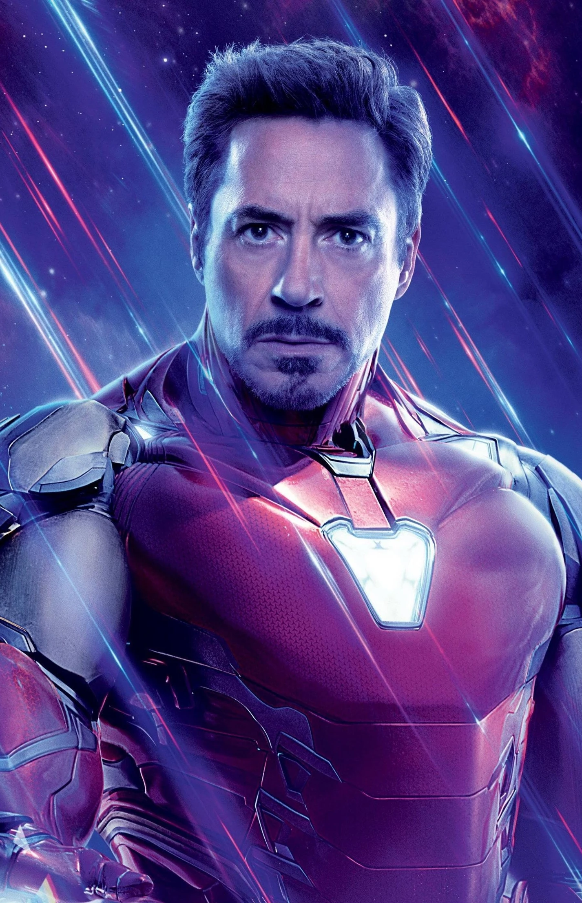

Tony Stark is a genius inventor and billionaire industrialist, who suits up in his armor of cutting-edge technology to become the super hero Iron Man. The adopted son of weapons manufacturer Howard Stark, Tony inherited his family's company at a young age following his parents' death.While overseeing a manufacturing plant in a foreign country, Stark was kidnapped by local terrorists. Instead of giving in to his captors' demands to build weapons for them, Stark created a powerful suit of armor for himself to escape. Returning to America, Stark further upgraded the armor and put his vast resources and intellect to use for the betterment of the world as Iron Man, also quickly giving up weapons manufacturing, having experienced first-hand the horrors of war.